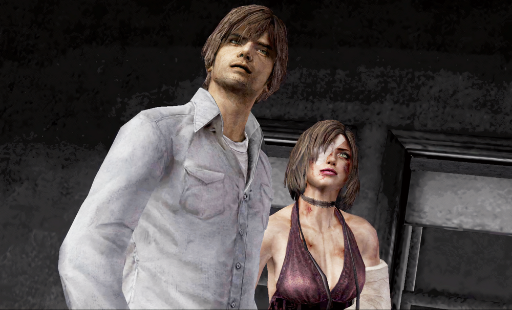
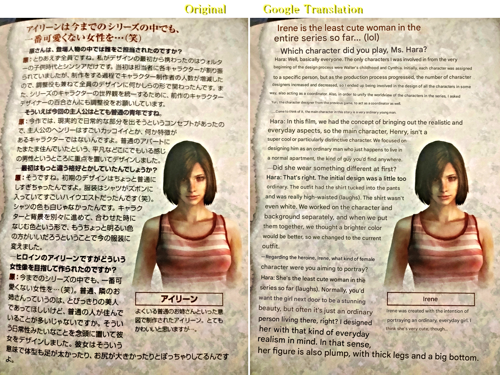
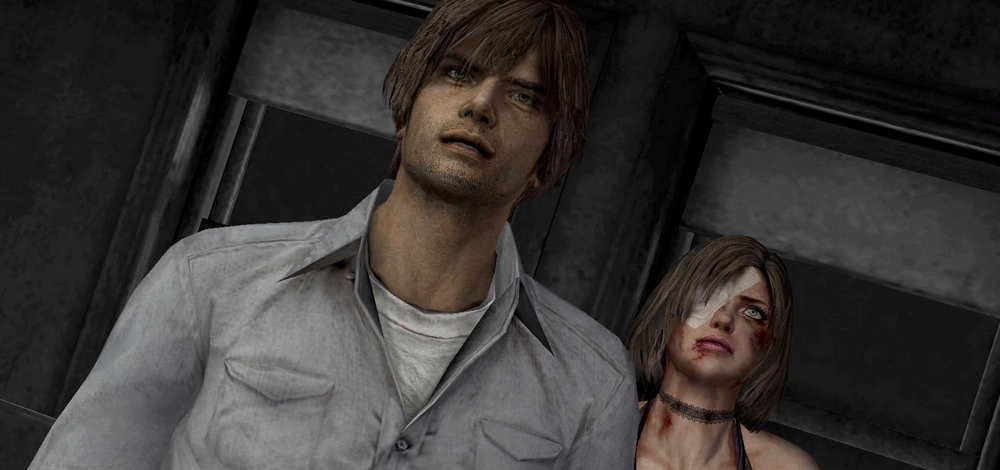
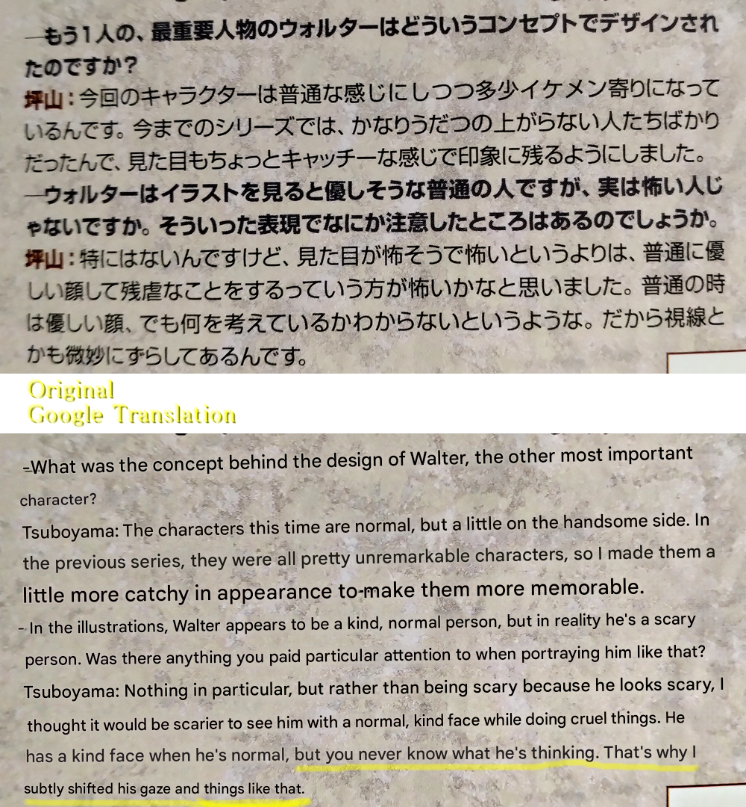
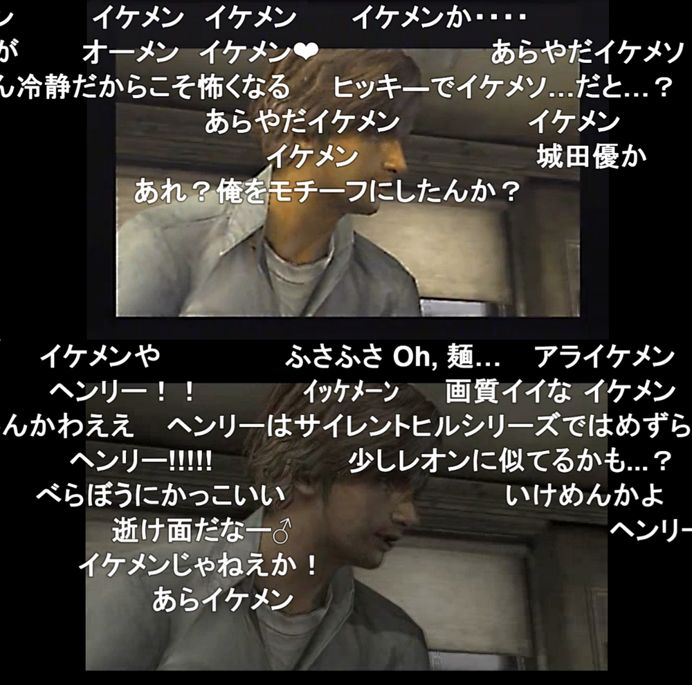
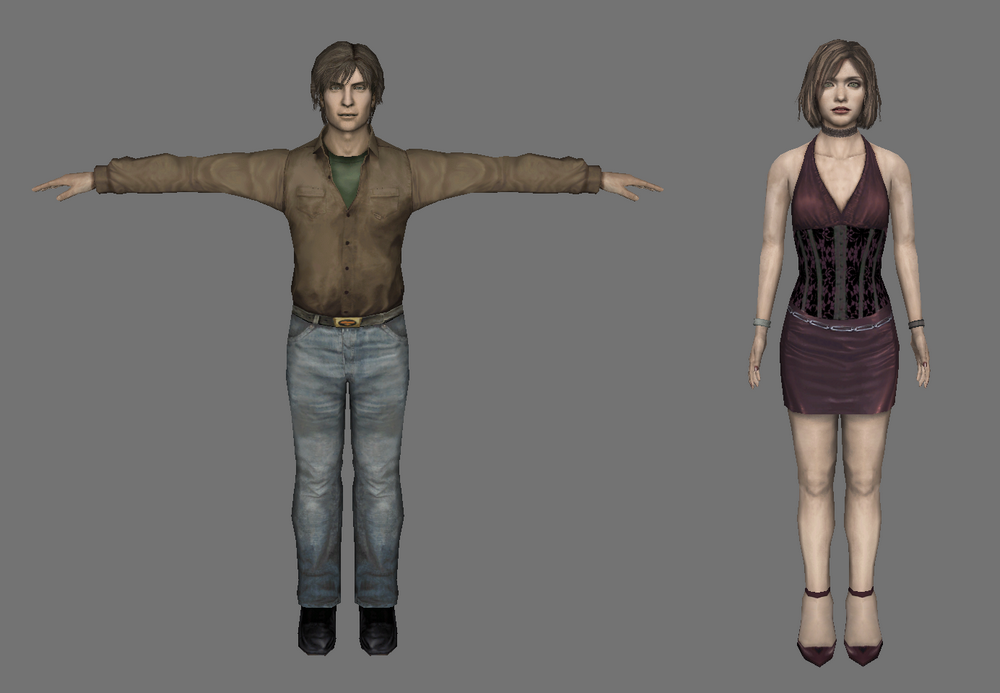
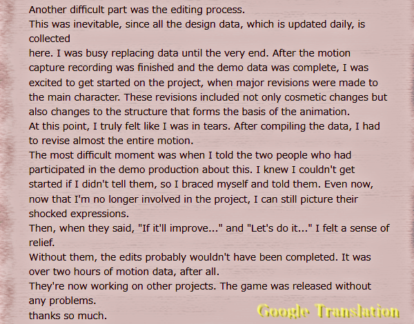
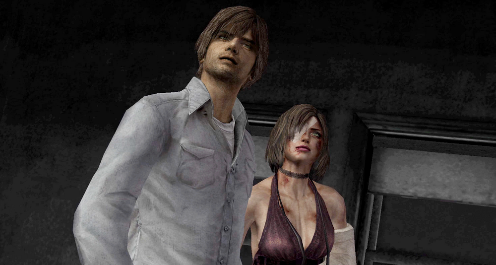
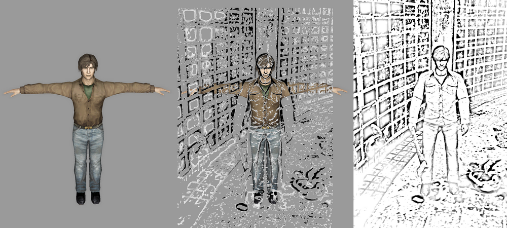

[SH4] Awkward Character Prototypes?!

The "Contradictions" in the Official Interview Weren't Contradictions After All. And Huge Thanks!
![[SH4] Awkward Character Prototypes?!](img/da43.png)
This is a mirror of the DeviantArt version linked above, provided as a backup and for easier access.


Google Translate messes up the names and pronouns as usual, turning "Eileen" into "Irene" and all that, but anyway.
In an interview of the official guide, Hara-san said that Henry was imagined as "an ordinary, average young man you could find anywhere." And about Eileen, she went even further, calling her "the least cute type among all the heroines so far." Wait, what? Aren't they the most conventionally attractive pair we've had? That was my reaction.
(*Although some community resources translate this as "We wanted to make Eileen the cutest female in the series yet," this is, just like the earlier mistranslation about Walter's eyes, the exact opposite of what was actually said. Hara-san said she wanted to make her "the least cute girl in the series so far," which is why Japanese fans were all like, "Where?!")

Meanwhile, on the very next page, Tsuboyama-san says Walter was designed to be handsome, which honestly just makes it even harder to tell where the boundary lies...

That weird disconnect in the interview was something fans around me talked about a lot even back in real time. Some people even thought they were deliberately saying the opposite of what they meant. Even the writer of the interview comments, "I think she's very cute, though..."
She also says "Henry isn't especially cool-looking or particularly distinctive as a character," but whenever Henry showed up on the video streaming site Nico Nico Douga (where comments scroll on screen), people would literally start shouting about how handsome he was! Something doesn't add up.

イケメン (ikemen) = handsome, that's what everyone's saying.
Then there's this line,
"In the initial design, we made him a bit too ordinary. His shirt was tucked into his pants, and the waistline was really high (laughs). The shirt wasn't even white."
When fans read that, many of them imagined it and went, "Noooo!" We were genuinely grateful they changed it.
But the contradiction remained a mystery...
And then, years later, people started extracting and analyzing character models from the PC version. Turns out, files believed to be the initial models are still in the game data.
And... yeah. That guy. Mr. Demo. (File name: anm_test.bin, demo.bin)

Aaarrrgggghhhhh!
There's a lot of digging into this kind of unreleased material by others, so I won't go too deep here. But I'm pretty sure my first reaction when I saw it, and yours, if you're seeing it for the first time now, is exactly the same.
Aaarrrgggghhhhh!
Was this what they were talking about in the interview? The high waist, the non-white shirt... and above all... yeah, kind of... not great-looking...
If that really was the original design, then honestly, thank you for changing it. Years later, I found myself thanking the devs all over again! But Demo-Eileen's not as unattractive as Hara-san says.
And then I remembered another interview, this one with Tsujimoto-san, who handled cutscenes, from the old official site (I mentioned it before):
🌐制作者の声「第7回:ムービー制作苦労話」デモムービー担当 辻本厚至
From Konami SILENT HILL 4 THE ROOM, Developer's Voice" Vol. 7: "Stories of Struggles in Movie Production" Demo Movie: Atsushi Tsujimoto
https://web.archive.org/web/20071207104637/http://www.konami.jp/gs/game/sh4/07roomq.html
"After motion capture recording was finished and the demo data was more or less complete, just as we were getting ready to polish everything up, we received major revisions to the main characters. Not just visual changes, but even structural changes that affected the base of the animations."

Back then, fans sympathized with that a lot. People were like, "That's brutal, making such big changes," or "Two hours of cutscenes means days and days of work," going into detail about how tough that must've been. And yeah, the work itself probably took longer back then, too.
I thought the same—until I saw Mr. Demo.
Looking back on it now, what if that massive rework was the shift from that version to the handsome one we have now...? (Of course, the in-game data and the cutscenes are different, and there may also have been further versions in between.)

If that's the case, then my opinion flips completely. To Tsujimoto-san and the two of you who probably worked through it in tears back then, thank you! Call it lookism if you want, but this version was absolutely the right call. I can't imagine anything else now. That's a third thank-you, by the way lol.
That said, if you apply some transparency to Henry's current in-game model, you can kind of still see traces of that early version...!? But at least in the demo, Henry didn't have that current bow-legged, kind of yakuza-like stance. Maybe this was one of the things they meant by "structural changes that affected the base of the animations"?

The interview never mentions who actually decided on the character redesign. Was it the art director? The overall director? The producer? Someone higher up in the company? No idea, but whoever it was, I'm grateful to that unsung hero!
Seriously, thank you so much!!! For the fourth time, haha.
...Though wow, that's kind of rude to say about the poor Demo-guy in that old model, huh. Sorry.
⚠️As I mentioned earlier, since one file is labeled "test" and another "demo," there may have been several stages between this and the final version. Maybe Mr. Demo didn't just suddenly turn into the Henry we have now.